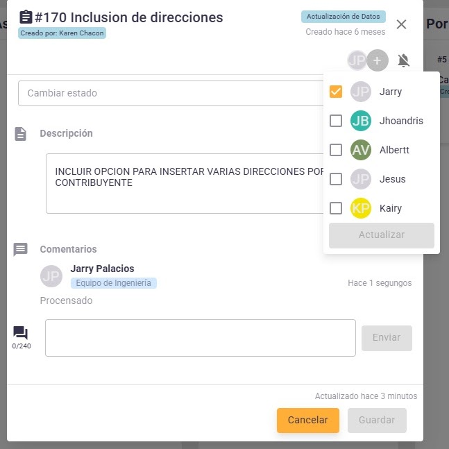
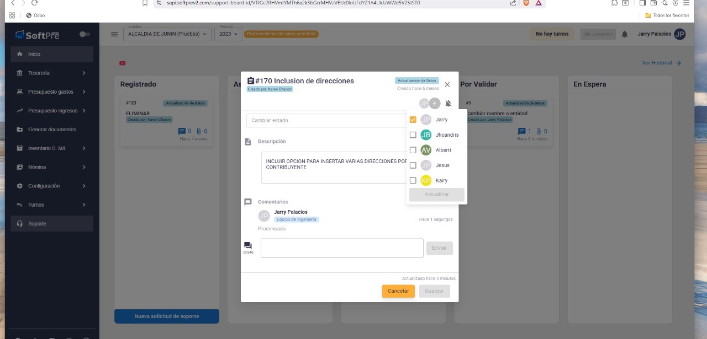
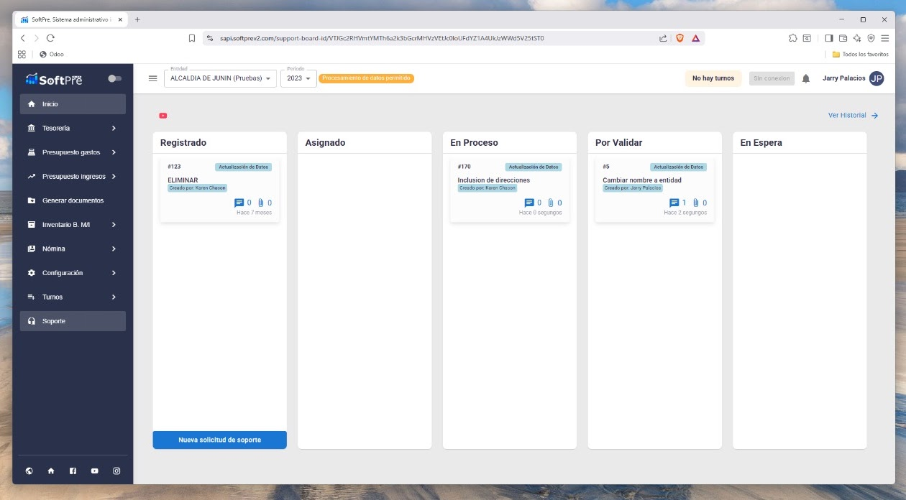

Una gestión pública más organizada, conectada y transparente.
SOFTPRE es una plataforma de control presupuestario para instituciones públicas y organizaciones. Gestiona procesos financieros y administrativos, con módulos integrados y reportes para el seguimiento institucional.
¿Qué es SOFTPRE?
SOFTPRE es un sistema de control presupuestario diseñado para optimizar la gestión financiera de los entes públicos y organizaciones. Facilita los procesos de formulación, ejecución y control del presupuesto, así como el seguimiento de operaciones financieras y administrativas a través de sus diferentes módulos.
SOFTPRE funciona como una plataforma web en la nube, accesible mediante internet y un navegador desde computadoras o tabletas, sin necesidad de instalar el sistema en cada equipo. Su enfoque busca apoyar la transparencia, la eficiencia y la toma de decisiones institucionales.
Marco normativo venezolano
La descripción institucional original de SOFTPRE señala como referencias para su diseño y operación las siguientes disposiciones y lineamientos:
- Publicación N.º 21 de la Contraloría General de la República de Venezuela.
- Lineamientos de la Oficina Nacional de Presupuesto (ONAPRE).
- Ley del Poder Público Municipal.
- Ley de Infogobierno.
La aplicación de estas disposiciones depende de los procesos, la entidad y la versión instalada; esta presentación no sustituye una evaluación de cumplimiento jurídico.
Módulos y reportes
Cada módulo reúne su descripción, funcionalidades, reportes y recursos disponibles.
Soporte técnico
Capturas de procesos de asistencia y seguimiento presentados en el Google Sites original.
Pantallas de soporte


